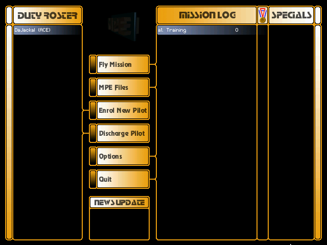
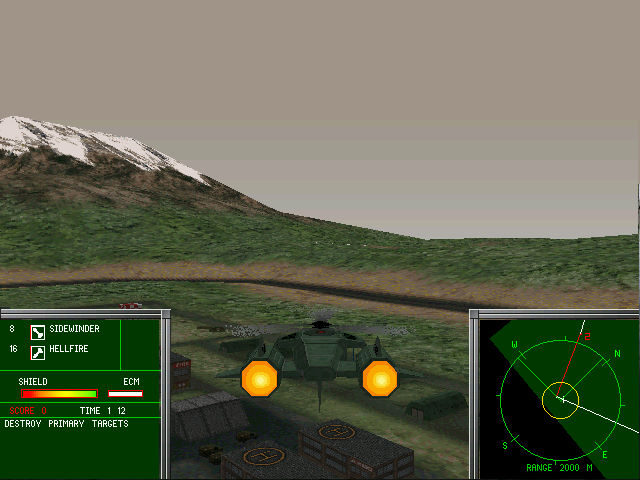

名稱：和平使者 (Peacemaker: Protect, Search & Destroy，英文版) 簡介：Jinxter 1999年出品的直升機戰鬥模擬射擊遊戲，由Brightstar代理發行 [待補]。

保護：光碟，破解碼： peacemk.exe C0 74 12 68 EC -- EB -- -- -- 2C FF D6 85 C0 74 22 -- -- -- -- -- EB -- 05 74 12 68 EC -- EB -- -- -- 30 FF D6 85 C0 74 22 -- -- -- -- -- EB -- 04 00 00 74 22 -- -- -- EB -- 00 00 50 FF D6 85 C0 74 22 -- -- -- -- -- -- -- EB -- 7C 24 18 74 22 -- -- -- EB --